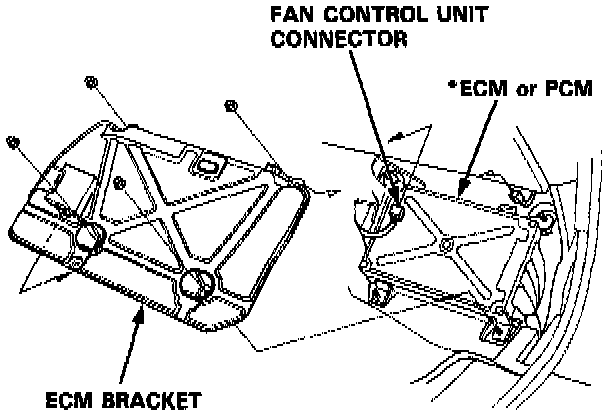
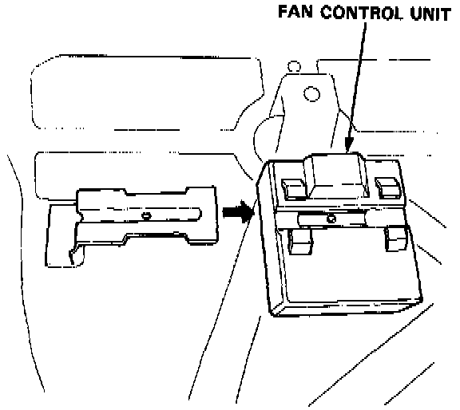

Control Module HVAC: Service and Repair
FAN CONTROL UNIT REPLACEMENT1. Remove the right door sill molding
2. Remove the small cover on the right kick panel.
3. Pull the carpet back to expose the *Engine Control Module (ECM) or Powertrain Control Module (PCM).
.

4. Remove the four nuts and ECM or PCM bracket, then disconnect the fan control unit connector.

5. Remove the fan control unit from *ECM or PCM bracket.
6. Install the fan control unit in the reverse order of removal.
*ECM for M/T
PCM for A/T